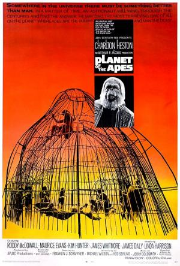

EL planeta de los simios |
||
|---|---|---|
|  | Sinopsis: George Taylor es un astronauta que forma parte de la tripulación de una nave espacial -en una misión de larga duración- que se estrella en un planeta desconocido en el que, a primera vista, no hay vida inteligente. Sin embargo, muy pronto se dará cuenta de que está gobernado por una raza de simios mentalmente muy desarrollados que esclavizan a unos seres humanos que carecen de la facultad de hablar. Cuando su líder, el doctor Zaius, descubre horrorizado que Taylor posee el don de la palabra, decide que hay que eliminarlo. |
Director:Franklin J. Schaffner Reparto:Charlton Heston, Roddy McDowall, Kim Hunter Año: 1968 Duracion:112 min Pais:Estados Unidos |
Criticas Profesionales:Javier OcañaUna de las mejores películas de Ciencia-Ficción hechas hasta la fecha. Mantiene todo su esplendor, sobre todo por su apocalíptico final: si no sabes cómo acaba la película tienes toda mi envidia |
Trailer |
Obtener:AlquilarComprar |
Registrate/Iniciar Sesion